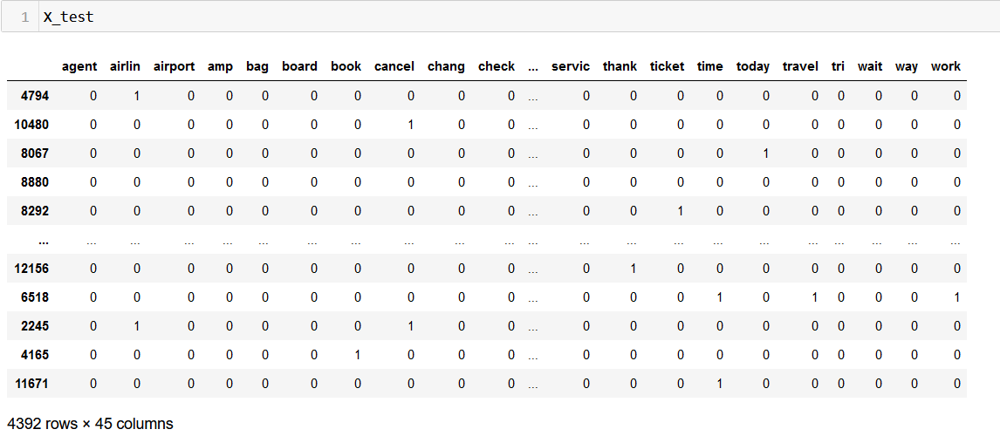

Artificial Neural Networks
Overview
Artificial Neural Networks (ANNs) are a class of machine learning models inspired by the structure and function of biological neural networks in the human brain. ANNs consist of interconnected nodes (neurons) organized in layers, where each neuron receives inputs, applies a transformation (activation function), and produces an output that is transmitted to neurons in the next layer. ANNs are capable of learning complex patterns and relationships from data through a process called training, where the model adjusts its internal parameters (weights and biases) based on examples from a labeled dataset.
In sentiment analysis, ANNs can be used to automatically determine the sentiment expressed in a piece of text, such as a customer review or a tweet. The input data (text) needs to be converted into a numerical representation that ANNs can process. This often involves techniques like word embedding, where words are mapped to high-dimensional vectors, capturing semantic relationships between words. When designing an ANN architecture for sentiment analysis, several options are available. For instance, Feedforward Neural Networks (FNNs) are the simplest form of ANNs, consisting of input, hidden, and output layers. Recurrent Neural Networks (RNNs) are suitable for sequential data like text, as they can capture temporal dependencies. Long Short-Term Memory (LSTM) or Gated Recurrent Unit (GRU) are variants of RNNs designed to address issues like the vanishing gradient problem and capture long-range dependencies.
Data Prep
To split data into training and testing sets without any overlap, you can use the train_test_split function from the scikit-learn library in Python. It internally handles choosing datapoints without replacement, making sure that there are no common data points between training and testing set.
Naive Bayes in python requires all the features to be in numeric form. Here is the sample input dataset:
Link to the data
Applying train test split divide the data and labels into training and testing sets.
X_train

X_test
Y_train and Y_test
Code
Here is the code to implement ANN.
Model
Here is the architecture of the model used for training:
Results
Let's take a look at resulting loss and accuracy after implementing this algorithm on our dataset.
Loss
Accuracy
Let's take a look at the classification metrics for this model

Conclusion
Even though ANN bears great capability of learning complex decision boundaries, proper architecture and hyperparameter tuning is a must to achieve optimal performance
This ANN model performed almost same as the rest of the algorithms. This could be attributed to the fact that the network might be biased due to lack to training iterations.